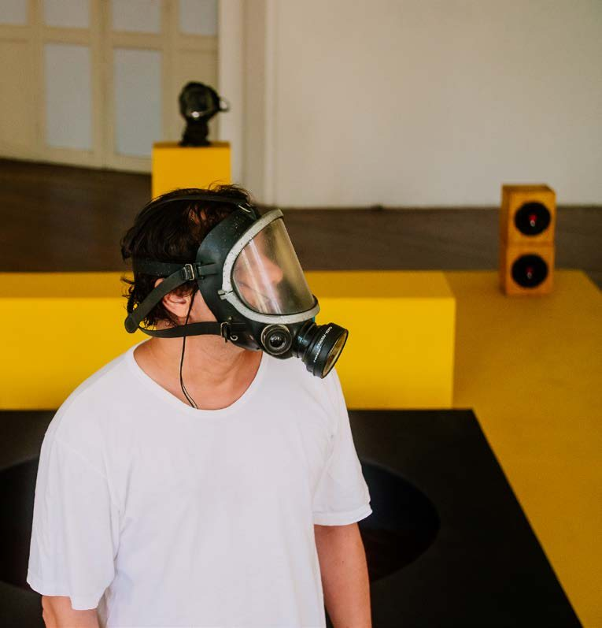
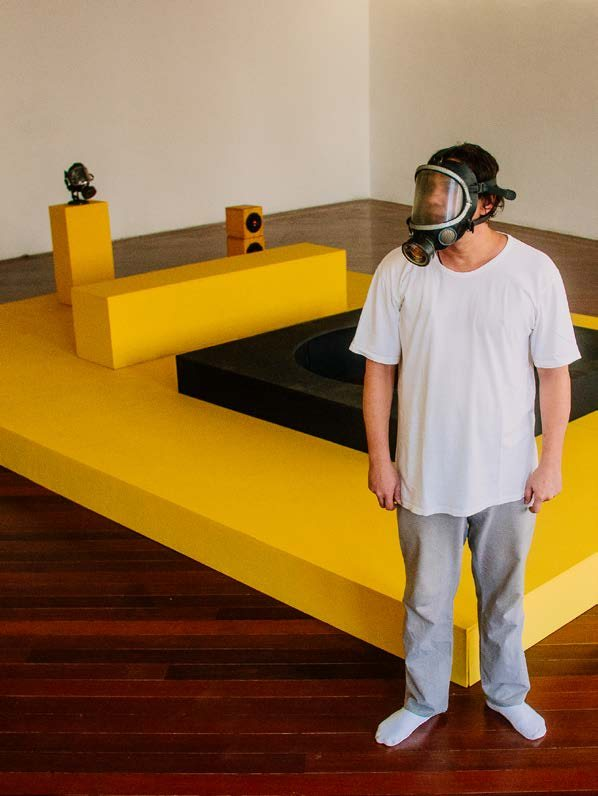

Cidade Labirinto
Centro Municipal de Arte Hélio Oiticica, City of Rio de Janeiro, 2021
Sound recording in preparation.
Exhibition comprising the installation Tablado número 30 — a painted wooden platform with loudspeakers, street recordings and a gas mask with loudspeaker — shown at the Centro Municipal de Arte Hélio Oiticica (May 2021), and a digital exhibition with podcast at cidadelabirinto.art (August 2021).
- Award
- Centro Municipal de Arte Hélio Oiticica, City of Rio de Janeiro, 2021
- Materials
- Tablado número 30: painted wooden platform, loudspeakers, street recordings, gas mask with loudspeaker; digital exhibition and podcast
- Venue
- Centro Municipal de Arte Hélio Oiticica, Rio de Janeiro (May 2021); cidadelabirinto.art (August 2021)
- Exhibition
- Cidade Labirinto (2021)


